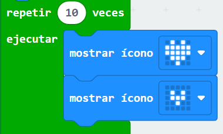
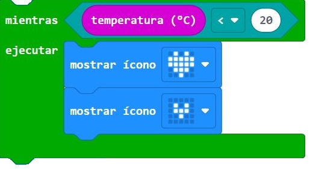

Las sentencias iterativas permiten repetir un grupo de instrucciones la cantidad de veces que sea necesario.
Según el programa que se necesite realizar, en algunas ocasiones el número de iteraciones siempre deberá ser el mismo, en otras deberá variar dependiendo del valor de determinada expresión lógica. Atendiendo a lo anterior, existen diferentes tipos de iteraciones de las cuales se explican las más utilizadas.
Repetir
En este tipo de sentencia de control se establece de antemano la cantidad de repeticiones que se realizarán.
Ejemplos:
MakeCode
Se repite 10 veces la secuencia de instrucciones en las que se muestra el corazón grande y luego el pequeño.

Scratch
Se repite 10 veces la secuencia de instrucciones en la que se despliega un saludo, se mueve al objeto 10 pasos y se le cambia el disfraz.

Mientras
En este caso se repite un grupo de instrucciones mientras determinada expresión lógica sea verdadera
MakeCode
Mientras el valor de la temperatura sea menor que 20, se repiten las instrucciones que muestran un corazón grande y luego uno pequeño.

Hasta que
En este tipo de iteración se repite un grupo de instrucciones hasta que determinada expresión lógica sea verdadera.
Ejemplo
Scratch
Se repiten las instrucciones hasta que el objeto programado esté tocando al color indicado. El color podrá estar presente en otro objeto o en el escenario.